Word - 高级技巧 - 样式定义/导航窗格/多级列表/自定义目录
一、样式定义和导航窗格
步骤一 创建一级标题样式，设置相应格式
1 | 操作：开始选项卡->创建样式->输入样式名称->点击修改->输入指定样式->单击确定按钮 |
一级列表样式格式如下：
1 | 一级列表：小三宋体加粗，大纲级别1级，1.5倍行距，无特殊格式，其余默认。 |
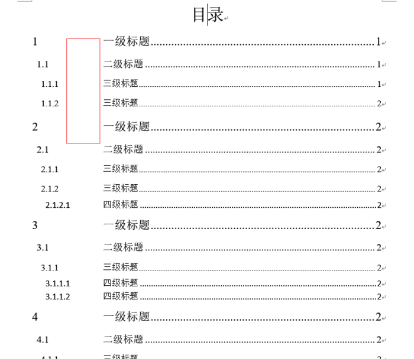
创建样式
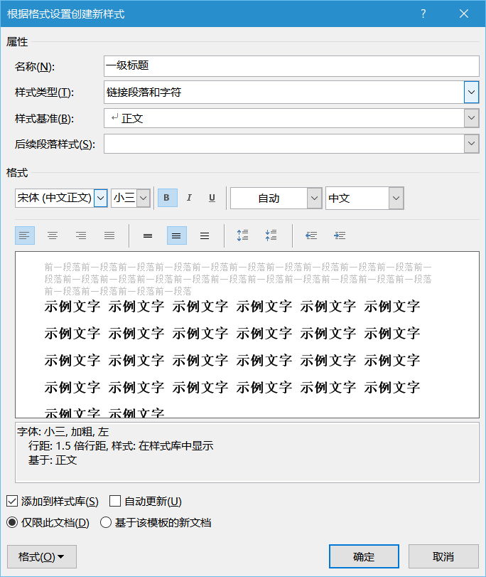
样式格式
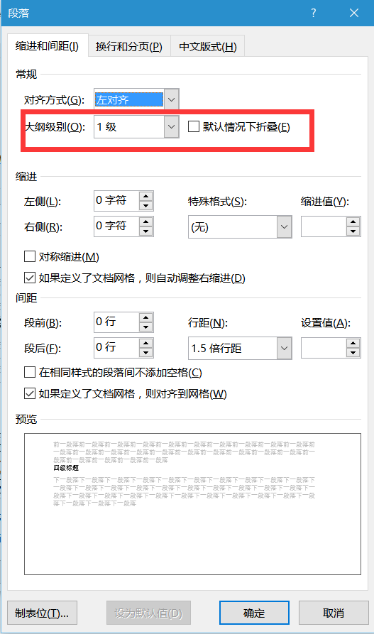
大纲级别设置
步骤二 创建其余标题或内容样式
根据步骤一的方法，依次创建二级标题，三级标题，四级标题，我的正文新样式，其格式对应如下：
1 | 二级标题：小四宋体加粗，大纲级别2级，1.5倍行距，左侧缩进1字符，无特殊格式，其余默认。 |
注：缩进设置方法，单击格式按钮 -> 选择段落。
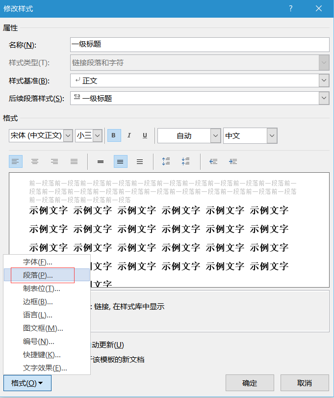
段落设置入口
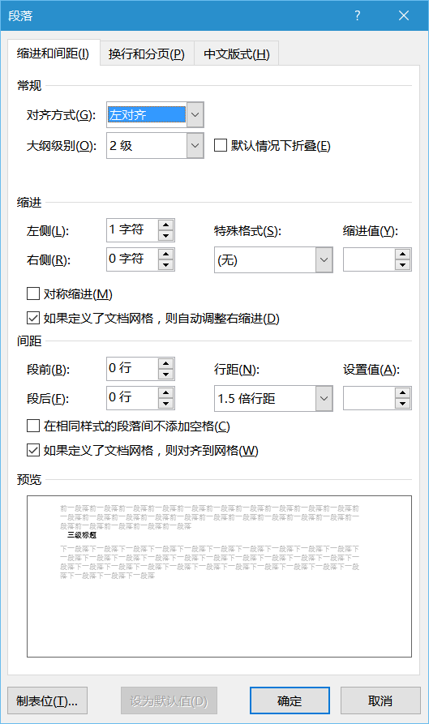
段落缩进设置
步骤三 设置样式至对应内容
选中内容单击指定样式快速设置格式，操作简单这里不再赘述，效果如下图所示：
样式效果
当然这里为什么需要样式的创建和定义，为什么要这么复杂。主要目的是为后续的操作奠定基础，比如多级列表，目录的自动生成等，使操作更加方便。
步骤四 调出左侧导航窗格
1 | 操作：视图选项卡 -> 显示栏目勾选导航窗格 |
由于前面的操作对样式进行了大纲视图的设置，所以调出导航窗口后，你将会看到下面的效果，如果显示内容为空或者效果不佳，请查看操作过程是否由遗漏或出错。
导航窗口调出
二、多级列表
步骤一 定义新的多级列表
1 | 操作：开始选项卡 -> 段落选项 -> 点击多级列表按钮 -> 定义新的多级列表 |
定义新的多级列表
步骤二 设置列表格式
1.首先设置一级列表的格式，如下图所示，圈出部分为修改项，其余根据自身情况修改。
1 | 操作：单击要修改的级别 -> 将级别链接到样式(一级标题) -> 起始编号 -> 此级别的编号样式 -> 编号之后选择空格(制表格会影响后续目录生成的效果) |
设置一级列表格式
2.设置二级列表格式，操作与一级列表一致，只不过此时需要设置包含的级别编号来自，因为二级列表前面的序号需要根据一级列表改变，此时需要设置包含的级别编号来自级别一，操作如图所示：
设置二级列表
1 | 输入编号的格式1.1，其中小数点为手动添加，其余文本缩进位置等选项，可根据自身要求进行修改。 |
3.根据二级列表格式的设置步骤，依次设置三级列表和四级列表，最终效果如下
多级列表
这样操作的好处相信大家都明白，假如在撰写文档的过程中，需要调整章节或者删减章节的话，标题前面的序号会跟着自动变化，而不至于像个小白一样，重新把编号一个个手动去更改。
当然，如果想定义以下形式的多级列表，也是非常简单的，下面请看步骤：
定义新的多级列表
a. 编辑一级列表时，在“输入编号的格式”一栏中，手动输入第章，其中的数字一二三由下面的“此级别的编号样式”给出，如下图所示：
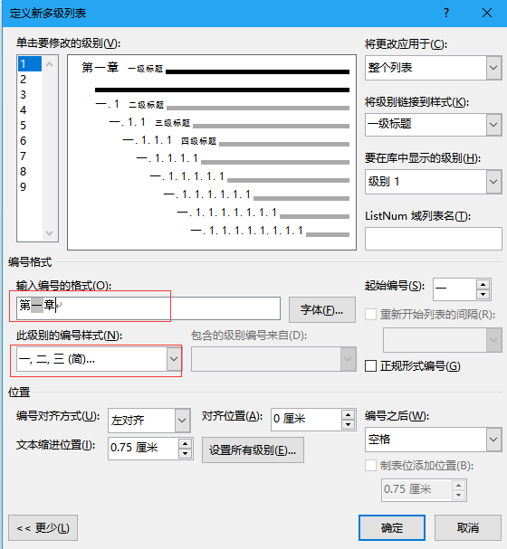
编辑一级列表
b. 编辑二三四级列表时，跟之前步骤类似，不过需要勾选“正规形式编号”的选项，如下图所示：
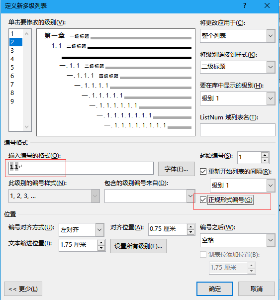
编辑二三四级列表
三、自定义目录
目录的引用，也是非常重要的技能，感兴趣的话做好get准备。步骤也相对简单，希望能让你们有所收获，下面将对步骤进行表述和演示。
1.找到自定义目录按钮，操作如下：
1 | 操作：引用选项卡 -> 目录 -> 自定义目录 |
自定义目录入口
2.设置目录级别对应样式，单击选项按钮，清除默认的目录级别，将目录级别与样式标题进行绑定。
1 | 有效样式：一级标题 ->目录级别： 1 |
绑定样式
3.绑定设置完成后，点击修改按钮，设置每一级的格式，这里示例的格式如下：
1 | 一级目录：四号宋体，1.5倍行距，无特殊格式，其余默认。 |
单击样式窗体中的目录1后，单击修改按钮修改样式，最后点击确定按钮。同理，设置目录2，目录3，目录4样式。
目录样式
4.单击目录窗体中确定按钮，此时可看到目录已成功生成，如下图所示：
目录生成效果
另外，下面还有两点需要大家注意
-
当正文内容发生修改时，可在目录区域单击鼠标右键，选择更新域，更新整个目录或只更新页码，即可完成目录的更新操作。
更新域
-
当出现标题和序号之前出现若干空格时，出现这种情况一般是多级列表定义的时候设置“编号之后”的格式为“制表符”而造成的。此时需看下多级列表的设置中，有没有将“编号之后”的选项设置为空格。
自动生成的目录出现空格问题
以下为改正方法：
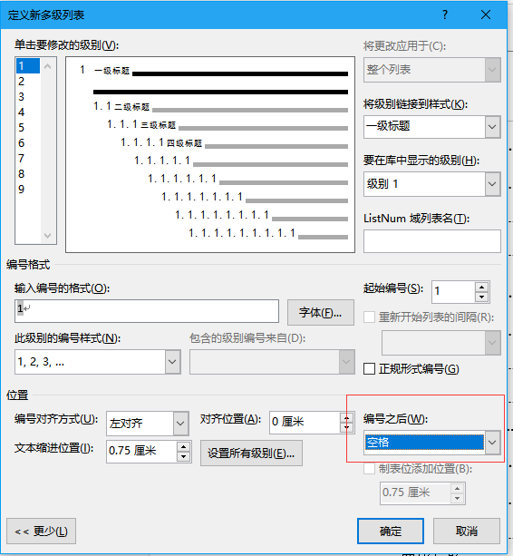
修复自动生成的目录出现空格问题
Word 中图片和表格的自动编号
发表于 2013-05-24 作者 H Zeng
更新于 2015-08-27
使用 Word 编辑长文档经常需要给文档中的图片和表格进行编号，特别是科技文档，如毕业论文。人工给图片和表格编号的缺点想必很多人都曾遇到过，不修改还好，一调整顺序就大乱。Word 其实可以自动给图片和表格分别编号，甚至可以设定编号的格式，在修改文档的时候它还可以自动调整编号。这绝对是编辑长文档所必备的技巧。
因为图片和表格需要分别编号，并且操作方式类似，下面就以图片的自动编号为例进行说明。需要注意的区别是，按照一般的习惯，以及科技文档的要求，图题应该放在图片的下方，而表题应该放在表格的上方。
本文介绍的操作可以做为前面介绍的使用 Word 中的样式来加速论文排版操作的补充。分成两大块来介绍：添加自动编号、引用编号。
Word 有内置的题注格式，如果不想用，还可以新建新的格式。在文档中新建之后，以后就可以直接用了。
首先，插入题注。¶
插入需要的图片，在图片上单击鼠标右键，选择“插入题注”（Insert Caption，如下图所示），
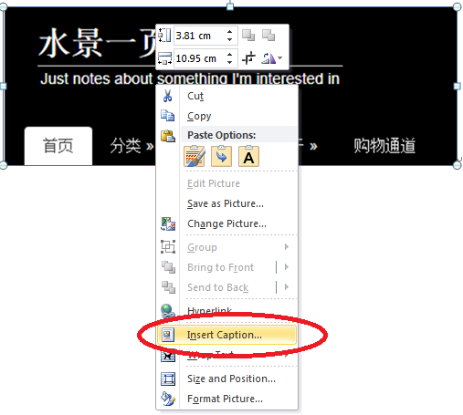
Word 中为图片右键单击选择“插入题注”（Insert Caption）
第二，调整配置。
在弹出的题注设置对话框（如下图所示）中输入/设置题注的标题（输入标题时最好在前面自动生成的题注标签和编号后面输入一个空格），选项中的标签、（题注）位置，还可以勾选下面的排除标签选项。
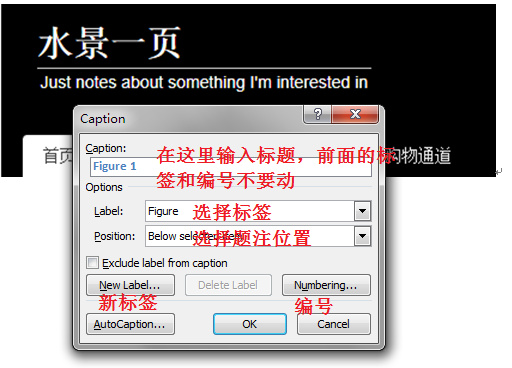
Word 图片题注对话框
如果已经新建过标签了，可以在选择标签那一栏右边的小箭头那里找到。
第三，新建标签。
如果默认的题注形式不符合要求，还可以自己创建一个“新标签”（New Label），也可以只更改“编号”。比如上面默认的标签是 Figure，我想改成“图”。于是单击“新建标签”，在弹出的对话框中输入“图”（不要引号），此时题注对话框的第一行的自动生成部分就符合要求了。
第四，修改编号格式。
一般毕业论文中的图和表，其题注的编号需要带上章节号，例如，图1-1 xxx。此时，我们单击“编号”（Numbering），打开“题注编号”（Caption Numbering）对话框，如下图所示。
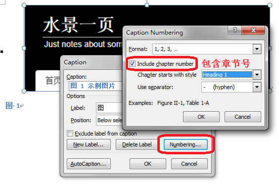
Word 图片题注编号设置对话框
选中“包含章节号”（Include chapter number），上面可以选择数字格式，然后就可以在下面选择 Heading 1，下面还有连接符。这个 Heading 1 就是一级标题的意思（一般章标题都用一级标题）。
这些修改完成后，在同一个文档中都是一直有效的。
Word 图片题注示例
成品如上图所示。如果没有设置上面的那个章标题（1 示例），Word 会报错，不过只要再给文档加入章标题，然后更新一下题注即可。
第五，更新题注。
每次调整了图片/表格在文档中的顺序，或者是在中间删除/增加了某些图片/表格，整个文档的图片/表格的编号都需要重新编排。一般 Word 会自动完成，如果发现它没有自动完成，可以选中文档全部内容，然后鼠标右键单击，选择菜单中的“更新域”即可。也可以使用 Word 域的快捷键操作以提高效率。
Word 中提供了很多自动完成的功能，几乎都是通过 Word 中的域功能来完成的。
2. 引用图片/表格的编号
既然图片/表格的编号是自动生成的，我们在行文中引用的时候，比如 图 1-1、表 1-1，也应该使用自动的编号，以方便在调整文档之后图片/表格的编号发生变化时让 Word 自动给引用的编号也做相应的调整。
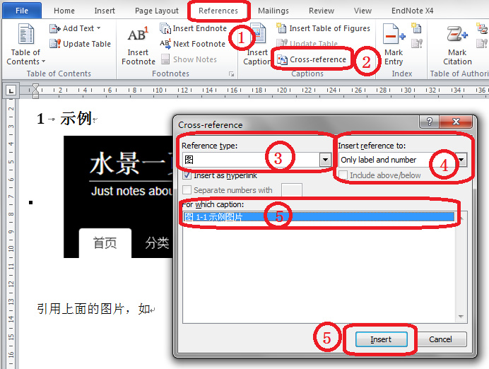
Word 插入交叉引用的图片
引用很简单，只要将鼠标光标定位到需要插入引用的位置，然后（步骤编号如上图所示）：
- 单击 Word 工具栏中的“引用”（References）选项卡；
- 单击“交叉引用”（Cross-reference）即可打开对话框；
- 选择要引用的“类型”（Reference type）；
- 选择引用格式（Insert reference to），一般是“只有标签和编号”（Only label and number）；
- 挑选要引用的那幅图；
- 单击“插入”（Insert）；
- 已完成。
为了提高效率，上面的步骤 1~2 可以用快捷键（按顺序）：Alt ——> s ——> r f；而步骤 3~7 可以用 Tab 键配合上、下键和 Enter 键来完成。这样可以达到手不离开键盘就能完成所有操作的目的。